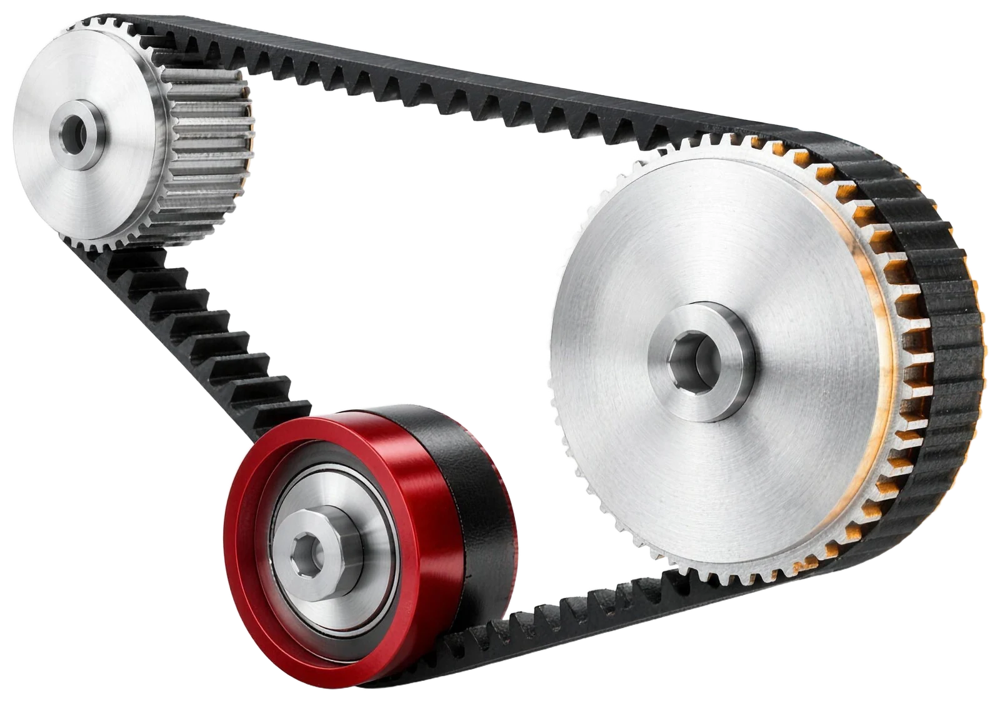
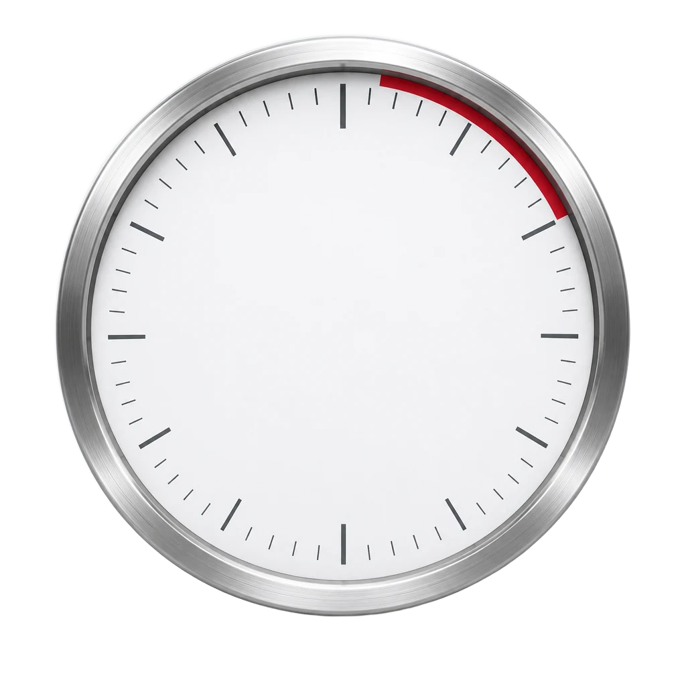

El cerebro no es vuestro
92-98 %
Del día en piloto automático. Entrenando, como mucho llegaríamos a un 20-25 % consciente.
Leer el capítulo completo →María pidió no contar las dinámicas a quien aún no haya hecho el taller (el Grupo III lo hace el 23 de octubre). Por eso este resumen tiene dos modos: sin spoilers y completo.
Grupo II · Jueves 15 de octubre
Lo que vimos en el taller de automatismos de eficiencia con María y Rodrigo, de Oye, ordenado para repasarlo y ponerlo en práctica.
Empezar a leer
 La sala de formación, Alcalá de Henares
La sala de formación, Alcalá de HenaresCinco horas, un grupo pequeño y mucho debate: del «¿qué tal?» al cliente que grita por teléfono.
Diez ideas que María repitió en este grupo. Si solo lees esto, ya te llevas el taller.
92-98 %
Del día en piloto automático. Entrenando, como mucho llegaríamos a un 20-25 % consciente.
Leer el capítulo completo →Procesa antes el peligro, le da igual si algo es verdad, es vago y le encantan los atajos.
Leer el capítulo completo →
Deciden qué ves, qué escuchas y qué das por hecho. Los tenemos todos; los sesgos, no.
«El tiempo es el aliado de la corteza prefrontal». Unos segundos entre el estímulo y la respuesta.
Leer el capítulo completo →
Hacemos lo que le sale rentable al grupo y nos contagiamos: el «¿qué tal?», la prisa, hasta los prejuicios.
Leer el capítulo completo →Un método nuevo de tres sesiones y una metáfora: el gimnasio. Ir un día al año no sirve.
Una lectura misteriosa abre la mañana y da paso a las quejas que el cerebro suelta sin pedir permiso.
Programas, virus, falta de memoria y actualizaciones. El gancho: el sistema que «ayer os dejó tirados».
La presión que sube medio grado cada vez y la libertad de elegir la actitud.
Del defensivo al «quita, que ya voy yo», recién inventado. Con debate sobre los cacharros.
Ramón y Cajal, las «patitas» de las neuronas y los pequeños gestos de «aquí mando yo».
La frase de la mañana y un debate muy sincero sobre Neuronita, la mascota de Oye en redes.
La tristeza como mecanismo de eficiencia y una pregunta: ¿qué es la felicidad para vosotros?
Dieciocho minutos de pausa. A la vuelta, tres cosas pendientes en la cabeza.
El «¿qué tal?», tres equipos separados «como un peine» y una historia muy corta.
Vagos por naturaleza: propiocepción, dopamina, el móvil y el arte de aburrirse.
Imágenes proyectadas con la luz apagada y una conversación sobre falsos recuerdos colectivos.
Presión cotidiana, el cortisol que pasa factura y los cuatro niveles de activación.
Un control a 200 metros, un cliente que grita y lo que sabe quien ha estado de cara al público.
Tiras de papel, un rotulador y silencio absoluto.
Un test en el móvil, unas gafas de colores y el anuncio del reto guiado por correo.
María lo explicó como un sistema operativo, y el gancho estaba en casa: el sistema de Reynasa os había dejado tirados el día anterior.
El taller es la primera de tres sesiones de un método nuevo de Oye: neurociencia aplicada a la gestión de personas y a la autogestión. Va de algo que nadie nos cuenta: que podemos incidir en los comportamientos que no nos dejan tener paz, dormir o reaccionar como querríamos. Por eso se llama gimnasio: ir un día al año no sirve. Si después todo sigue igual, «las sesiones no sirvieron absolutamente para nada».
El taller arranca con una lectura que hay que adivinar. Mejor llegar sin saber qué es.
María leyó del tirón una lista de frases sueltas: «¿dónde he dejado las llaves?», «demasiada azúcar», «qué hambre tengo», «me estoy agobiando, no sé si esto va a salir bien»… y preguntó qué era. La sala apuntó a «conversar contigo mismo» y a la «sobreestimulación».
Un motín cerebral es un pensamiento, una queja o una idea al azar que el cerebro vuelca dentro de tu cabeza sin pedirte permiso: el dolor al levantarte, el café demasiado caliente, el calor. María contó 18 desde las 6:30 de esa mañana. No salen en voz alta, pero cambian la química: no segregas lo mismo diciendo «qué asco de café» que «qué rico está».
La sala lo definió mejor que nadie: «no ser un barco a la deriva» y «ponerte unas pautas e ir siguiéndolas». Es coger el timón, la autogestión. Cuesta porque el cerebro quiere ser protagonista las 24 horas. Y casi todo lo que se vio vale para cualquier persona: es biología y evolución, vivas en una ciudad o en un pueblo rodeado de vacas.
| En un ordenador | En tu cerebro |
|---|---|
| Programas | Patrones de comportamiento: instrucciones que se graban a base de repetir. Atarte el cordón, subirte las gafas, beber cuando tienes sed. «El 90 % tienen que ser patrones», apuntó la sala. |
| Virus | Patrones que bloquean tus relaciones o tu comunicación y no te hacen eficiente. Tienen su propio capítulo. |
| Sin almacenamiento | Estrés: «no puedo más». Saturado, el cerebro no quiere aprender y tira de los patrones de siempre, grabados a fuego, porque gastan menos batería. |
| Actualizaciones | Aprender y adaptarse. Hay sistemas operativos «del año 86» que no se van a actualizar nunca. |
| Fallo del sistema | Coge las riendas el sistema límbico: reaccionas sin pensar si la reacción es la correcta. Más conflictos, menos conexión y, si lideras, un equipo desalineado. |
Los automatismos son un tesoro: sin ellos no aguantaríamos el día, porque el cerebro es de los órganos que más energía gastan. El problema empieza en los patrones que usamos para relacionarnos: cómo damos feedback, cómo vivimos la presión, cómo nos comunicamos o cómo reaccionamos a un cambio. Cuando la empresa cambia el programa de facturación, casi ningún cerebro piensa «qué oportunidad»: piensa «¿por qué, si estábamos bien?». No es que seamos raros: está programado así.
Para la sala, presión es «no llegar a algo», aunque también puede ser aprendizaje, «en pocas dosis»: depende del grado y de la frecuencia. Si echas una rana en agua hirviendo, salta; si la metes en agua fría y subes medio grado cada poco, se quema sin darse cuenta. Así sube la presión.
¿Por qué unos la viven como aprendizaje y otros se bloquean? Hay quien trabaja cada día en un tanatorio y va contento a trabajar. Lo de fuera marca, pero «la autogestión sigue siendo la clave de todo». María contó la historia de Viktor Frankl, que en un campo de concentración nazi lo perdió todo menos una cosa: la actitud con la que decidía afrontar lo que le pasaba. Traducido: si un día decido enfadarme con todo el mundo, que lo decida yo. Y eso está en nuestras manos «casi siempre, un 80 %».
«Lo que nunca te van a quitar es la libertad de elegir.»
Viktor Frankl, en palabras de María
Cambian el mercado, los clientes, la competencia y los equipos. «Lo de la IA ya me iré enterando» no vale: todos deberíamos estar atentos. Y quien lidera no puede hacerlo igual que hace diez años con un equipo que ya es otro: la esencia no te la quita nadie, pero hay que actualizarse. Hasta la charla de primera hora sobre «cozy», «cringe» y «FOMO» fue, en palabras de María, una actualización en directo.
Cuando alguien empieza a correr por las mañanas, dos neuronas extienden sus «patitas» y se conectan. Al principio la unión es floja; con la repetición se hace fuerte y se convierte en hábito. Con los malos hábitos pasa igual. Pero el cerebro es neuroplástico: puedes romper una conexión y crear otra. Hace falta querer, constancia y mucha voluntad, y con la edad cuesta más (también cambiar de opinión).
No siempre se trata de romper: a veces basta con crear cosas nuevas. Escuchar música que no es la tuya, comer algo distinto, lavarte los dientes con la otra mano. No producen grandes cambios por sí solos, pero son mensajes de «aquí mando yo».
En este punto se hace un pequeño ejercicio físico para notar cómo protesta el cerebro ante lo nuevo. Se entiende mejor haciéndolo sin saberlo.
A la de tres, cruzar los brazos como siempre, fijarse en qué mano queda encima y cruzarlos justo al revés. Risas y algún «no soy capaz». Al principio hay incomodidad: el cerebro se queda «alucinado». Si aguantas un minuto con la nueva postura, deja de molestar: has forzado una nueva conexión.
«Las personas reaccionamos en lugar de actuar con consciencia.»
María
Reaccionar está bien con un cordón desatado o ante un peligro. Pero también reaccionamos en automático cuando alguien nos critica: unos se hacen pequeños y otros se ponen a la defensiva. Ahí tiene que mediar la corteza prefrontal. Ninguna conducta queda prohibida: si después de pensarlo toca dar un grito, se da, pero que sea consciente. Un participante lo resumió en «contar hasta diez», que es justo el paso central del método (capítulo 5).
El «software» que traemos todos de fábrica. Esta vez María los numeró del 1 al 4, y cada uno se vivió en la sala.
Su misión es que sobrevivas «a toda costa», y te considera más vulnerable cuando estás feliz, porque bajas la guardia. «Prefiere tenerte triste, cabreado o asustado que feliz».
Busca coherencia, seguridad y lo que ya tiene. Interpreta según tus valores, tu experiencia, tu mochila y lo que viste en casa, y te construye una historia que encaje.
Si puede ahorrar energía, la ahorra. Se mueve entre supervivencia y ahorro, y decide por su cuenta a qué atender: no notas la ropa que llevas puesta hasta que alguien la menciona. «La decisión no la tomo yo. La toma él».
Siempre que pueda automatizar un proceso, lo hará. No es que tus ojos o tu cerebro funcionen mal: es un cerebro evolucionado con mecanismos de eficiencia que necesita.
Imagina que siempre te ha dado miedo la velocidad y tu hijo, recién sacado el carné, hace un viaje de cinco horas. No duermes: tu cerebro está en piloto automático. La única forma de romperlo es hacerle razonar: ¿qué probabilidad hay de que salga tan mal? María no usa porcentajes, sino una escala: muy baja, baja, media, alta o muy alta. «Ha conducido, el coche está bien: probabilidad baja». En cuanto razonas, la conducta puede ser decidida.
Cada rasgo se experimentó en la sala: un recuerdo, una sensación imaginada, un experimento sobre la piel e imágenes proyectadas. Si aún no has hecho el taller, mejor vivirlo sin saber nada.
Pensar «con toda la intención» en el momento más duro de tu vida y después, con los ojos cerrados, en el más feliz. A casi todos les cuesta más el feliz, y el triste llega con sensación física (el nudo, las lágrimas). Después, una pregunta: ¿qué es la felicidad para vosotros? «No estar en preocupación», «estar tranquila», «bailar», «compartir momentos con personas a las que aprecio», «disfrutar plenamente de un momento». La de María: «todo está colocado», que no significa que no haya problemas.
Manos en forma de garra y a imaginar que arañas una pizarra antigua. Grima en la sala. No es verdad, pero al cerebro le da igual: lo tiene registrado y reproduce el escalofrío.
Una hojita de laurel cae desde 2 o 3 cm sobre el antebrazo. «Una cosquillita», «un toquecito». Con la hoja aún encima: «¿ahora notáis algo?». «Nada». Es la deshabituación sensorial: el cerebro llama a los neurotransmisores «por walkie-talkie», comprueban que no quema, no corta y no aplasta, y vuelven «a las cocheras».
Además de funcionar en automático, tenemos filtros perceptivos: deciden qué vemos, qué escuchamos, qué interpretamos y qué damos por hecho. Y muchas veces, cómo actuamos.
«Estos cinco los vais a poner en marcha, si no todos los días, muchísimas veces en vuestra vida». Tenerlos no es el problema, porque se pueden regular. El problema es actuar y decidir en función del filtro.
Si toda la vida has oído en casa que los de cierto equipo de fútbol son unos imbéciles, llegarás a mayor con ese prejuicio. El problema aparece si trabajas en selección y el candidato entra con el escudo de ese equipo. Además, los prejuicios no son solo personales, son de piara: la sociedad nos acostumbra a construirlos.
En la vida es muy difícil que algo pase «siempre». Y si de verdad pasa siempre: ¿qué has hecho tú, en todos esos «siempre», para evitarlo? ¿Qué estaba en tu mano? Es una cuestión de análisis.
Una forma de omisión: lo haces bien, todo el mundo te lo dice y nunca te lo crees («suerte», «me lo dicen porque me quieren»). No es necesariamente autoestima, sino análisis: ¿cuánto tiempo llevo haciéndolo? ¿Qué resultados tengo? ¿Cuánta gente me dice que soy bueno en esto? Si los datos son objetivos, ¿por qué no te lo crees? La otra cara: la gente feliz y positiva suele omitir lo que no le interesa.
Un anclaje es un objeto que te recuerda algo. Si sueles entrar en alerta máxima, puedes llevar algo simbólico en el bolsillo: al tocarlo, el cerebro se da cuenta de lo que está pasando, y con el hábito basta con tocarlo. Para los filtros, sirve cualquier símbolo a la vista que te diga «cuidado, ya estás diciendo siempre».
En el taller se proyectan cuatro fotos durante 3 segundos y se contesta lo primero que viene a la cabeza. Lo que pasa después es mejor descubrirlo en la sala.
Cuatro tiras de papel, un rotulador y silencio absoluto para que los cerebros no se contagien. Cada foto, 3 segundos; luego una pregunta sencilla y lo primero que venga. Rodrigo iba pegando las tiras en los paneles.
| Foto | Lo que contestó el grupo | La realidad |
|---|---|---|
| Mujer en bikini rojo en el mar. Edad y estado civil. | Entre 25 y 50 años. Casadas y solteras. | Tenía 78 años. En España no asociamos esa edad con un bikini, y menos rojo. |
| Joven sonriente con ropa en blanco y negro. Profesión. | Camarera (tres veces), maître, estudiante, periodista. | Actriz de cine para adultos. La ropa en blanco y negro empuja a la hostelería. |
| Anciana con gafas. Esta vez, «no contestéis rápido»: una emoción. | Ternura (la mayoría), la infancia. | Una asesina en serie condenada en Estados Unidos. «Os he manipulado»: el tono y la consigna llevaron al cerebro al cajón de las abuelas. |
| Mujer madura con gafas y americana. Profesión. | Jueza, abogada, escritora, administradora. | Donna Strickland, Premio Nobel de Física. Su aspecto se asocia a profesiones de mucho estudio. |
Al final, un test de 10 preguntas en el móvil (con QR) da el filtro que más aparece en tu conducta diaria. Si ninguna opción convence, se elige la que más se aproxime. En este grupo salieron sobre todo omisión y alguna generalización. Cada filtro tiene su color, y cada uno se llevó unas gafas de su color para escribir el nombre del filtro y dejarlas a la vista: un anclaje que dice «cuidado».
Estar bajo presión no es tener un día en el que todo falla: basta con un semáforo. El método para que no decida el sistema límbico por ti.
El semáforo se pone verde y el coche de delante no arranca: uno, dos, tres segundos. La reacción habitual va en escalada: el pitido, el insulto, pitar a lo bestia, sacar la cabeza por la ventanilla… Empezar a hervir por dentro no se puede evitar: es tu cerebro funcionando. Lo que sí puedes es meter la corteza prefrontal antes de la conducta con dos preguntas. ¿Me merece la pena todo el cortisol que voy a segregar? ¿Qué probabilidad hay de que el de delante quiera fastidiarme hoy? La sala lo tuvo claro: «ninguna». Puede ser un despiste, que lleve niños o que acabe de recibir una mala noticia.
La amígdala detecta una amenaza, real o percibida, y activa el eje hipotálamo-hipófisis-suprarrenal. En segundos se liberan cortisol y adrenalina (hasta cierran los capilares para que, si te hieren, sangres menos), la corteza prefrontal pasa a segundo plano y el cerebro prioriza la velocidad frente a la precisión. El cuerpo se acostumbra a vivir así, pero si dura años, pasa factura: la tensión, el sueño, el pelo… no se sabe cuál. Y muchas noches de insomnio vienen de haber pasado el día en alerta.
Bajo presión escuchamos peor, interpretamos más rápido y reaccionamos a la defensiva, con una de tres respuestas: huida, bloqueo o ataque, que serán el centro de la sesión del 4 de noviembre. No son debilidades: es un cerebro normal que quiere gastar menos pila.
Lo que no puedes evitar ya ha pasado: la amenaza, el sudor, el corazón acelerado. Ahora toca darte cuenta: «ya estoy otra vez con el miedo absurdo».
Treinta segundos, veinte, quince. Ten varios recursos, porque no siempre vale el mismo:
Con datos y probabilidad: ¿qué está pasando de verdad? Y si un día decides decirle algo al de delante, que sea porque lo has decidido tú, no porque el sistema límbico lo haya hecho por ti.
«El tiempo es el aliado de la corteza prefrontal.»
María
Un ejemplo: imagina que te dan pánico los controles de la Guardia Civil, sin motivo alguno, y ves uno a 200 metros. Sudor, pulso acelerado: hasta ahí, nada que hacer. Reconoces el miedo, haces la pausa (respirar, una canción) y respondes con datos. ¿Llevo algo ilegal en el coche? No. ¿He bebido? Tampoco. No es una amenaza real.
Con un cliente que grita por teléfono: lo reconozco, respiro, pido unos segundos y elijo la respuesta. Y si un día no se puede, no pasa nada. La sala, con experiencia de mostrador y de call center, añadió matices que valen oro:
| Nivel | Qué es |
|---|---|
| Calma | Los momentos de «todo está colocado». Hay gente a la que todo le resbala, pero son las menos. |
| Activación normal | Las tareas rutinarias, la compra, el trabajo que dominas. |
| Alta tensión | El cerebro se prepara para la acción, la haya o no. «Voy apresurada a todo, aunque no tenga prisa, hasta para ducharme», contó una participante. |
| Alerta máxima | El momento de la acción. Imprescindible si un niño va a cruzar delante de un autobús. |
Un corredor de 100 metros busca la calma antes, en el túnel de vestuarios (por eso tantos deportistas se ponen cascos o repiten rituales de calentamiento); activación normal camino de la pista; alta tensión en los tacos; alerta máxima con el disparo. Lo bueno es manejar los cuatro cuando toca. ¿De cuál no se debe abusar? «De la alerta máxima», respondió la sala. Y al cerebro hay que darle datos: «no vayas tan deprisa» no sirve; «aún me quedan diez minutos», sí.
Las que más se repitieron en la sala, para tenerlas a mano.
La metáfora estrella de este grupo. Formamos parte de un rebaño… o mejor, de una piara: hacemos lo que le sale rentable al grupo y nos contagiamos.
Adoptamos conductas que son rentables de cara al grupo y nos dejan vivir más tranquilos. Muchas veces no actuamos como queremos, sino como miembros de la piara, para evitarnos problemas.
Te encuentras a alguien a quien hace tiempo que no ves: «¿qué tal?». La sala lo bordó: «bien», «ahí, tirando», «luchando», «para la que está cayendo, no estamos mal», «ni tan mal», «sin noticias, buenas noticias». Nadie en España contesta «estoy en el mejor momento de mi vida», aunque lo esté: despertaría envidia o le tacharían de prepotente.
Es una pregunta de cortesía: no saca información ni conecta cerebros, porque la respuesta ya está escrita. Si de verdad quieres saber, mejor «¿qué es lo mejor que te ha pasado hoy?». Del grupo salieron otras salidas: el compañero que siempre contesta algo distinto («¡espectacular!», y su química cambia con la palabra) o el «¿quieres el bien típico o te cuento?».
Por eso en las dinámicas se separan los equipos: «somos cerdos, nos vamos a contagiar». Pasa al bajar del tren en Madrid, cuando todo el mundo corre y tú también, sin tener prisa. Y pasa con los prejuicios: no son solo personales, son de piara. La sociedad nos acostumbra a construirlos y los asumimos como verdades casi totales.
Un participante sacó el efecto Mandela: mucha gente «recordaba» que Nelson Mandela había muerto en la cárcel, cuando salió y llegó a presidente; otros juran que el muñeco del Monopoly lleva monóculo. Son recuerdos falsos que comparte mucha gente a la vez. María lo encajó como un sesgo cognitivo: a diferencia de los filtros, los sesgos no los tenemos todos, y cambian con lo que vivimos.
En el taller, por equipos, se lee una historia muy corta y se responden cinco preguntas con el reloj en marcha. Lo que pasa ahí es mejor vivirlo sin saber nada.
Tres equipos, separados «como un peine», y una historia leída una sola vez: «Ayer por la tarde, Gonzalo salió de la oficina después de discutir con un cliente. Caminó muy rápido hacia el parque. Allí vio a un amigo hablando con su ex. Se acercó, dijo algo en voz alta y cinco minutos después alguien salió corriendo». 30 segundos por pregunta, en voz baja.
Antes de terminar las instrucciones, el grupo ya competía: «¿quién es el primero?», «30 segundos, competición». María lo paró en seco: «Yo no he nombrado la palabra competición en ningún momento. Es tu interpretación».
| Pregunta | Lo que respondieron los equipos |
|---|---|
| ¿Gonzalo estaba enfadado? | Sí («discutió con un cliente»), no («discutir no es estar enfadado») y tal vez. |
| ¿La discusión fue intensa? | No, y «no podemos determinarlo». |
| ¿El amigo le traicionaba? | «No, solo estaba hablando», «no tiene motivos» y «no lo sabemos». |
| ¿Gonzalo gritó? | «No sabemos» y «no». |
| ¿Quién salió corriendo? | «Alguien, no sabemos quién» y «no tenemos ni idea». |
Un participante objetó: «lo hemos interpretado porque nos lo has pedido; otra respuesta sería "no me importa"». María: «Yo no os he pedido que interpretéis. Yo he hecho una pregunta». «No lo sé» era igual de válido, y el 99 % de la gente interpreta. Cuando no lo sabemos, no lo inventamos.
Un virus es lo que bloquea tus relaciones o tu comunicación y no te hace eficiente. Este grupo repasó ocho, uno de ellos recién inventado en la sala.
«Cuando hay cosas que no funcionan, se cambian.»
María
El ejemplo de siempre: el hijo adolescente con la ropa tirada. «Niño, recoge la ropa», y al día siguiente igual, y al otro «ya te lo he dicho veinte mil veces». ¿Funciona ese patrón de comunicación? No. Pues hay que cambiarlo y probar alternativas, sin broncas. La conclusión del debate de los cacharros la puso la sala: lo malo es ver que algo está mal, que te genere un pensamiento negativo o un problema, y no poner los medios para solucionarlo.
En el taller se practican ejercicios sencillos de coordinación para sacar al cerebro de su zona cómoda. Se descubren en la sala.
«Uno de los patrones más peligrosos que tiene el cerebro es la comunicación». Se aprende con los años y casi nunca lo revisamos.
Nos enseñaron ortografía, gramática y reglas en negativo: no grites, no digas palabrotas. Nadie nos enseñó a hacer una llamada eficiente o a ganarnos la atención de quien escucha. El primer paso es analizar: ¿cómo me he comunicado y qué efecto he causado?
«He visto esto, le faltan algunas cosas, creo que podemos mejorarlo, le damos una vuelta». Frente al intimidatorio: quien cree que su misión es hacer ver a los demás lo inútiles que son y «decirles la verdad a la cara».
Es la que más patrones tiene y es automática: cruzar los brazos, estirar los pies. Decir «no, no pasa nada» mientras todo tu cuerpo dice lo contrario. Es lo más difícil de cambiar, y se estudia con la sinergología.
Bloquearte, pasarlo fatal, combatir o mediar suelen ser patrones aprendidos durante años, a menudo en casa. Cada uno lleva su mochila.
«No estés triste, con lo guapo que eres». No sirven para nada. Sirve más «¿por qué lloras? Cuéntame», un silencio, alguien al lado o un abrazo. Y los demás no siempre necesitan tu consejo.
Mandas un mensaje para ir al cine, lo leen y no contestan: «habrán quedado sin mí». El problema llega una semana después, cuando se te nota la molestia. Si dudas, pregunta.
Comunicar para influir es «súper egoísta», reconoció María, aunque los demás también viven mejor. Ella lleva veinte años estudiando comunicación (verbal, no verbal, prosodia) y dice que no va a terminar nunca.
Situaciones de nuestro día a día que salieron en la sala, con el concepto que las explica y qué hacer distinto.
Los sistemas operativos fallan, y el cerebro también.
Qué hacer: Reconocer, pausa y respuesta. Un fallo no es una amenaza vital.
Resistencia al cambio: «¿por qué, si estábamos bien?».
Qué hacer: Saber que es el cerebro ahorrando energía ayuda a actualizarse.
Virus defensivo y del escaqueo.
Qué hacer: Detectar el patrón en uno mismo antes que en los demás.
Virus del «quita, quita»: aprender a pasar desapercibido.
Qué hacer: Reconocer el aprendizaje: «si doy hasta aquí, me cogen hasta aquí».
Renuncia silenciosa.
Qué hacer: Es una característica de la época, y la gente está en su derecho.
Virus de la urgencia: alerta constante.
Qué hacer: Analizar en frío qué es urgente de verdad: «ninguno opera a corazón abierto».
Virus de «quita, que ya voy yo».
Qué hacer: Otras formas pueden ser igual de válidas. Evitar discusiones estériles.
Patrón asertivo frente a intimidatorio.
Qué hacer: Decir lo que hay que decir de forma constructiva.
Sin actualizaciones.
Qué hacer: Estar al tanto del mercado, del cliente y de la competencia, toque o no.
El cerebro prioriza la alerta.
Qué hacer: Saber que tiende a lo negativo y, si hay duda, preguntar.
Rellenar huecos; y el de al lado influye.
Qué hacer: No actuar según tu interpretación: quizá las cifras son buenísimas.
Bajo presión: amígdala, cortisol, defensa.
Qué hacer: Reconocer, respirar, «dame unos segunditos», elegir la respuesta.
Sin periodo de latencia.
Qué hacer: Darse un rato para regularse entre una y otra.
Reacción defensiva.
Qué hacer: Aplicar la pausa también con compañeros, no solo con clientes.
Condescendencia: tono correcto, mensaje de desprecio.
Qué hacer: Ponerle nombre. No se normaliza, pero cómo te afecta sí se gestiona.
Generalización.
Qué hacer: Preguntarte qué has hecho tú para evitar ese «siempre».
Prejuicio.
Qué hacer: No decidir en función del prejuicio.
La presión del tiempo.
Qué hacer: Darle datos al cerebro: ¿cuánto tiempo tengo de verdad?
¿Hacen falta 21 días para crear un hábito? «Es un 21, pero hay estudios controvertidos». Depende de cada cerebro, y un mal hábito quizá necesite menos.
¿Por qué unos viven la presión como aprendizaje y otros se bloquean? Lo de fuera marca, pero la clave es la autogestión. Como contó Viktor Frankl, lo único que no te pueden quitar es la actitud con la que eliges afrontar lo que te pasa.
¿Con la edad tenemos menos neuroplasticidad? Sí: cuesta más romper hábitos, comportamientos y opiniones. Pero se puede.
¿Cómo identifico mis patrones más antiguos? Pregunta a alguien de mucha confianza qué haces mal al hablar o qué mala impresión causas. Si te lo dicen en círculos distintos, es verdad. El test del final también ayuda.
¿Habrá pautas específicas para Reynasa? Para eso tendrían que observar el día a día. Su misión es dar la pauta, y cada uno tiene que hacerla suya.
¿Vale contar hasta diez? Sí: es una de las formas de hacer la pausa, el paso central del método.
¿Es como la sugestión? Hay mucho estudiado sobre el efecto placebo, y el estrés agrava, por ejemplo, algunas enfermedades de la piel. María lo contó como divulgación general.
¿Hay estudios a largo plazo sobre el móvil y la dopamina? «No lo sé». Una respuesta honesta que vale para todo el taller.
¿El insomnio es por el cortisol? No solo. Pero cuanto más vives en alerta, más educas al cerebro para la alerta, y por la noche suelta todo lo acumulado.
¿Ir con prisa a todo, aunque no la tenga, es alta tensión? Probablemente. Hay que darle datos al cerebro: «aún me quedan diez minutos».
¿Y si las llamadas duras vienen una detrás de otra? Hace falta un periodo de latencia para volver a regularse entre una y otra.
¿Hay que normalizar los gritos? No. Pero no vas a cambiar a todos los que gritan; cómo te afecta sí está en tu mano.
¿Cuánto tiempo vamos en piloto automático? Entre el 92 y el 98 % del día. Entrenando, como mucho un 20-25 % consciente.
¿Hay que hacer el reto guiado? Es voluntario («somos adultos, no podemos obligar»), pero merece la pena buscarle un hueco.
El gimnasio solo funciona si se vuelve. Esta es la parte que depende de cada uno hasta la próxima sesión.
Al terminar, María anunció que os llegará por correo un reto guiado: un apoyo para empezar a cambiar alguno de estos automatismos. Es voluntario («somos adultos, no podemos obligar»), pero merece la pena buscarle un hueco. Se trabaja hasta la sesión del 4 de noviembre, dedicada a los automatismos de defensa (la huida, el bloqueo y el ataque). Allí habrá otro test y otro reto, y el 12 de noviembre, en la sesión de feedback, seréis «más protagonistas» que ellos: contaréis cómo os ha ido.
«Si no pasa nada, nos vemos el próximo 4 de noviembre.»
María, al cerrar
Para María y Rodrigo: lo que aportó este grupo, cómo se vivieron las dinámicas y un par de notas para las próximas sesiones.
Esta parte cuenta cómo reaccionó el grupo a cada dinámica y lo que quedó pendiente. Se abre en el modo completo.
«Si se sabe algo, el cerebro no va a salir del sofá.»
María, al pedir que no se contara nada al Grupo III
Por eso este resumen se abre en modo sin spoilers: las dinámicas quedan veladas y cada persona decide si las abre.
Todo el resumen en PDF y en Word, en las dos versiones. Y cada sección, en su propio PDF.
La versión sin spoilers se puede compartir con quien aún no ha hecho el taller. La completa, solo con quien ya lo hizo.
Cada sección tiene además su propio PDF y su enlace, en los botones que hay bajo su título.
Prepárate
Tres respiraciones lentas